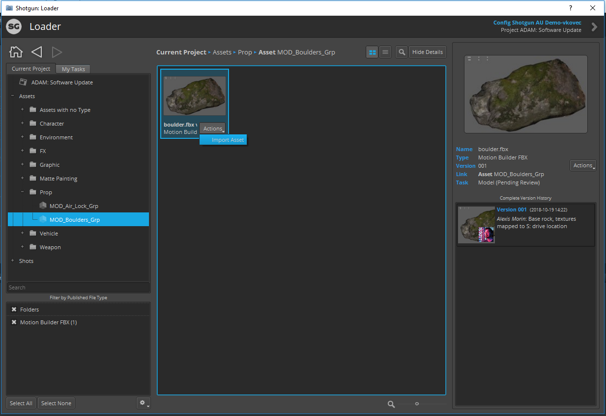

Unity es uno de los motores de videojuegos más populares del mundo, usado tanto por pequeños estudios indie como por grandes empresas. Al ganar popularidad, sus usuarios buscan integrar el motor dentro de su flujo de trabajo con el menor esfuerzo posible, por lo que Unity ha tenido que ofrecer paquetes que implementan estas distintas integraciones. Es el caso de Shotgrid, una herramienta ahora parte de la familia Autodesk, que está diseñada para gestionar flujos de trabajo complejos en producciones de videojuegos, cine y televisión. Facilita la planificación de tareas, seguimiento de assets y revisión colaborativa con las distintas funcionalidades que proporciona, e integrar esta herramienta con Unity permite a los equipos sincronizar ambos entornos de manera que se puede tener una mejor visión general del proyecto.
¿Por qué integrar Shotgrid con Unity?
Existen un par de ventajas en cuanto a integrar Shotgrid en Unity:
- Flujos de trabajo centralizados: La integración te permite gestionar y rastrear todos los activos y tareas directamente desde el entorno de Shotgrid, lo que asegura que los miembros del equipo tengan la versión más actualizada de cada archivo.
- Colaboración eficiente: Los equipos pueden compartir comentarios y actualizaciones en tiempo real. Por ejemplo, los artistas pueden subir versiones de modelos 3D o texturas a Shotgrid, donde los desarrolladores pueden visualizarlos e incorporarlos al proyecto en Unity.
- Seguimiento detallado del progreso: Los gestores de proyectos pueden utilizar Shotgrid para monitorizar el estado de cada tarea, asegurándose de que las metas se cumplan a tiempo. Resulta mucho más fácil detectar dónde están los cuellos de botella y reasignar recursos adecuadamente.
- Revisión y aprobación simplificadas: Con herramientas de revisión integradas, los supervisores pueden analizar el trabajo directamente desde Shotgrid, proporcionar retroalimentación precisa y garantizar que los assets cumplan con los estándares de calidad antes de integrarlos en Unity.
Cómo implementar la integración
En esta página viene detallada toda la documentación para el paquete de integración de Shotgrid con Unity. Nos permite descargar assets directamente desde la plataforma (si tenemos instalado el programa Shotgrid Desktop), cómo preparar un proyecto de Unity existente para Shotgrid, y funcionalidades del paquete que ayudan a mejorar la productividad.
Si estás trabajando en un equipo grande, creo que es fundamental integrar alguna herramienta de este tipo en el proyecto para tener un lugar centralizado donde realizar la comunicación y el seguimiento del progreso. Shotgrid es una muy buena opción debido a su integración existente con Unity, pero también existen otras opciones que puede que se adapten mejor a tus necesidades, como Trello o Codecks. Es cuestión de elegir aquella que te resulte más cómoda.